G Harish Kumar
I work in tech and enjoy travel, design and creative projects.
Originally from Hyderabad, I lived/worked in Florida and Bangalore,
immigrated to Australia in 2014, and now travel and live around Southeast Asia.
Interests include yoga, books, spirituality, psychology,
films, sports and investing in Stocks & Crypto.

Work
B.E (CS) - University of Madras Resume →Enterprise business applications, mainly EnterpriseOne - Oracle
ICS (Florida) - Developer
Oracle (Bangalore) - Principal Tech Analyst
Nufarm - E1 Consultant
Rinnai (Melbourne) - Supply Chain Analyst
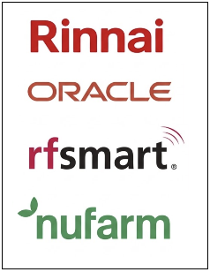
I have worked in enterprise software across consulting,
logistics, manufacturing and business transformation projects.
My core experience has been in ERP systems, especially
EnterpriseOne, integrations, process improvement and operations.
Experienced in migrating and porting master data from legacy systems into ERP using batch imports and SQL workflows. Skilled in data cleansing, validation, reconciliation and transformation.
Experienced in migrating and porting master data from legacy systems into ERP using batch imports and SQL workflows. Skilled in data cleansing, validation, reconciliation and transformation.
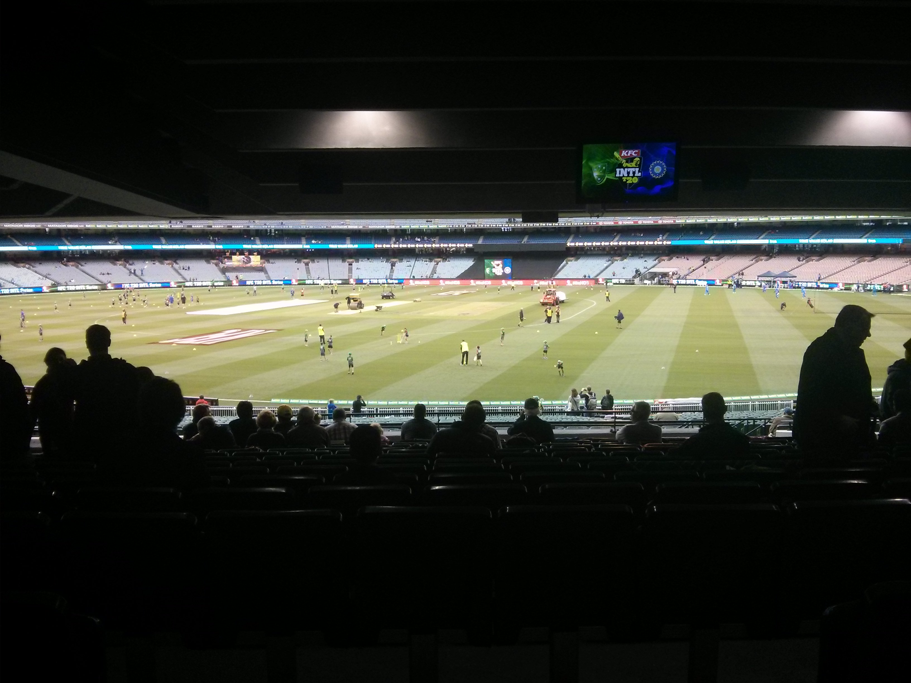
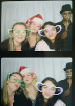
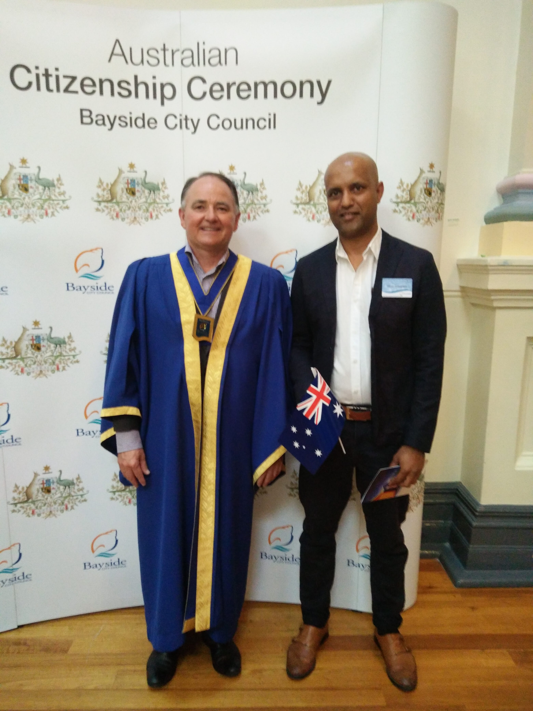
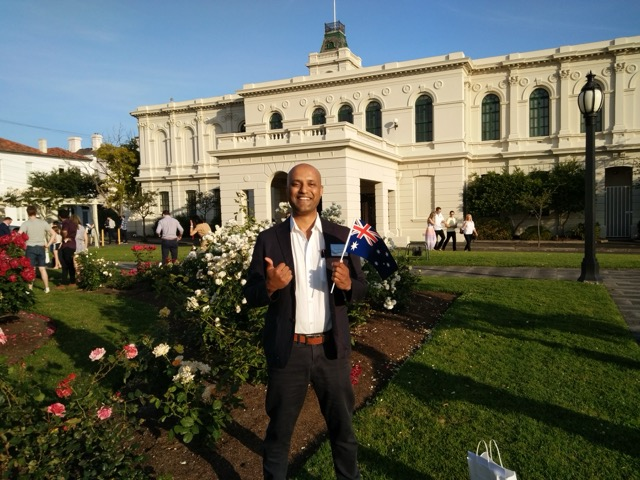
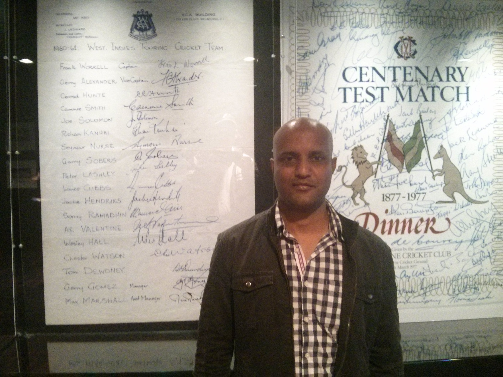
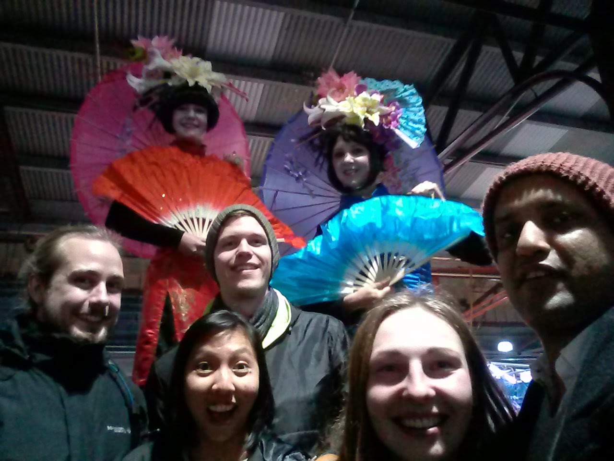
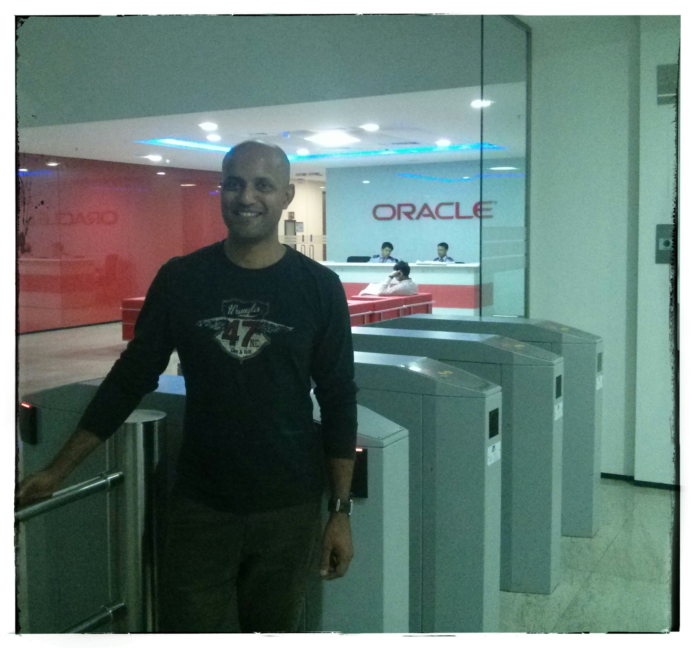
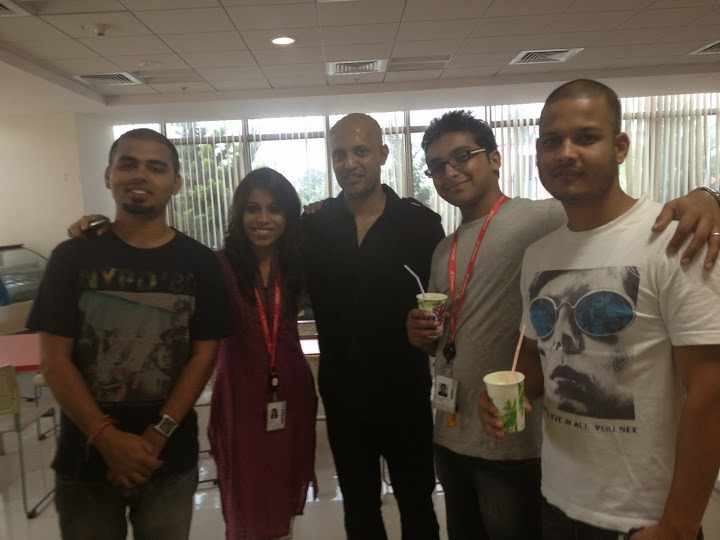
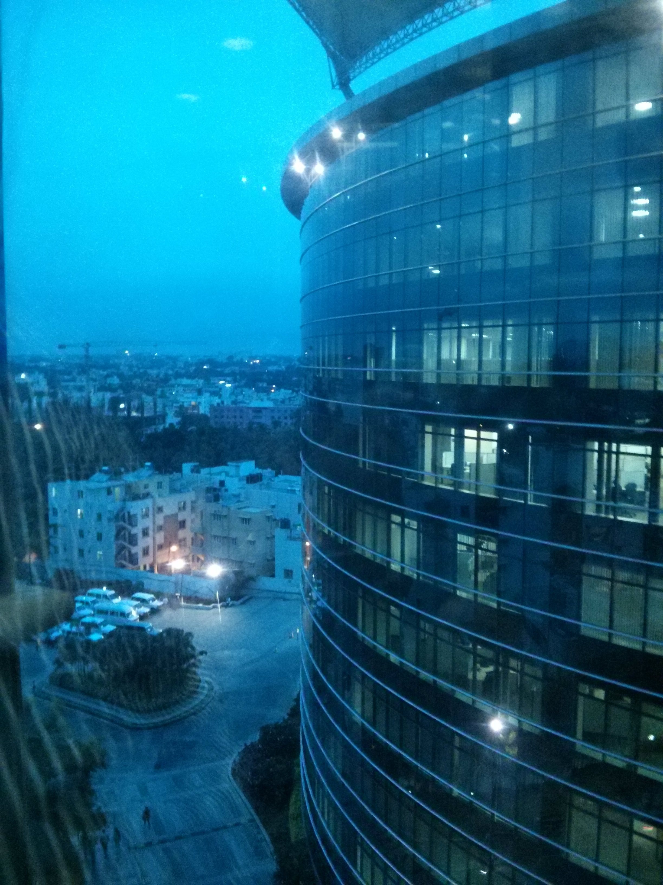
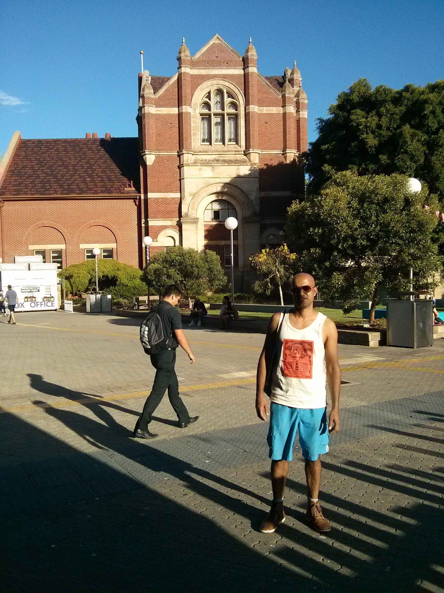
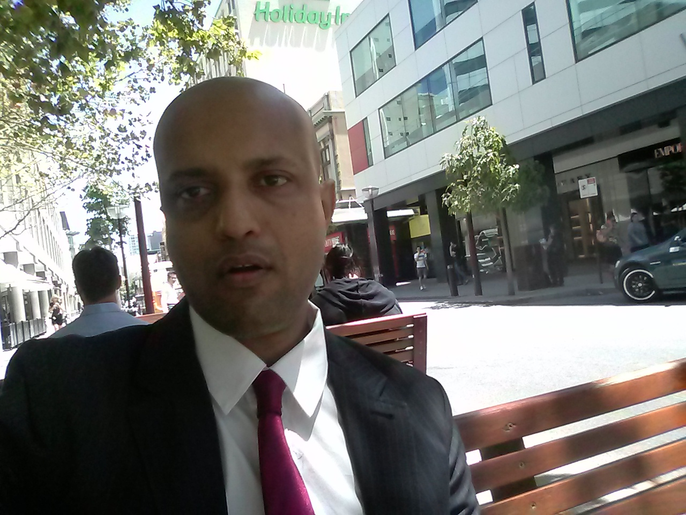